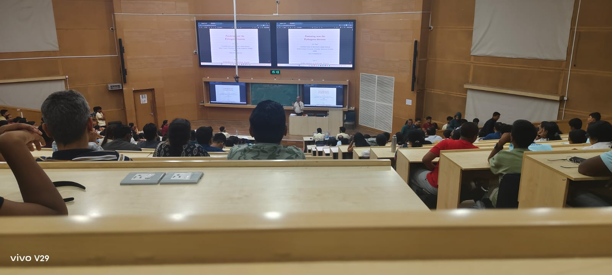

IITBMO 2026 — A Day of Quiet, Problems, and Perspective
A Sunday Defined by Mathematics
Arriving at IIT Bombay
There is a particular kind of quiet you only notice on academic campuses early in the morning. It isn’t emptiness — it feels more like anticipation.
That was the atmosphere when I arrived at the Indian Institute of Technology Bombay campus for IITBMO 2026. Walking toward the Lecture Hall Complex, my mind was already drifting towards inequalities, vectors, and the kinds of combinatorial ideas that only appear when a problem demands them.
The corridors of the building felt familiar in a strange way — as if they had stored years of thought from people who had studied there in the past.
Before the Exam Began
Before entering the exam hall, we were made to wait in a room on the ground floor. That room turned out to be the most interesting part of the morning.
Students from different cities, different schools, and different backgrounds were all gathered there. Yet the conversations were oddly uniform. Nobody spoke about marks, ranks or previous experiences. We spoke about problems — past problems, clever tricks, ideas we had seen before.
There was no formal introduction needed. Everyone spoke the same language of problem solving.
Inside the Hall
When the paper reached my desk, it had a certain weight to it — the kind that comes from expectation more than paper.
Flipping through it, I realized this was not a paper designed to confuse; it was designed to test clarity. Each question was precise, almost minimal. Geometry and Calculus demanded insight rather than formulas. Algebra required structure more than brute force. Probability hid its difficulty behind simple wording.
For three hours, the world shrank to the space between pen, paper, and thought. That strange focus — where nothing exists except reasoning — is one of the things I value most about olympiads.
After the Paper
Trying to walk out, my thoughts were mixed but calm — the usual post-olympiad state where you replay solutions in your head but also feel oddly relieved.
One unexpected moment came when Jane Street was distributing T-shirts and goodies. On the surface it was just event swag, but to me it felt more symbolic.
As someone currently working on quantitative research, seeing a firm like Jane Street present at a mathematics olympiad made the connection between abstract problem solving and real-world quantitative systems feel immediate. The same habits we rely on in olympiads — structuring problems, spotting invariants, reasoning under constraints — are the ones that underpin modern quantitative finance.
It was a small reminder that the path from mathematical curiosity to applied quantitative work is not as distant as it sometimes seems.
A Walk Across Campus
With time before the results, I wandered across the campus. The greenery, the scale of the buildings, and the quiet pathways created a sense of perspective.
The exam suddenly felt small compared to the larger ecosystem of learning and research around it. It was a reminder that any single test is just one point in a much longer and more interesting journey.
The Lecture That Followed

We later gathered again for a a guest lecture by Dr. S. G. Dani titled Pondering with Pythagoras.
Rather than treating the theorem as a solved fact, he framed it as part of a long human conversation about space, measurement, and patterns. He spoke about its presence in the ancient śulba sūtras and other mathematical traditions, showing how ideas travel across cultures and centuries.
Listening after the exam, when the mind is oddly open, the talk felt less like instruction and more like perspective — a reminder that mathematics is not just a subject, but a lineage of thought, a tradition of problem solving that connects us to people across time and space.
The Results
When the results were announced and my name was called in the senior category, the moment felt both sudden and quiet at the same time.
Receiving the silver medal, certificate, and the cash prize was gratifying, of course. But what stayed with me was not the medal itself.
What Stayed With Me
What I carried home was:
- the shared silence of the exam hall
- the strange camaraderie in the waiting room
- the reminder from Dr. Dani that mathematics is a centuries-long conversation
The medal reflects performance on one day. The experience reflected something larger — that the process of learning, thinking, and exploring ideas is what really matters.
And that, more than the result, felt like the real takeaway.